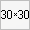

Выравнивает элемент по вертикали относительно своего родителя, окружающего текста или ячейки таблицы.
Значение по умолчанию baseline, не наследуется, применяется к строчным элементам или ячейкам таблицы.
| baseline | Выравнивает базовую линию блока по базовой линии родителя. Если у блока нет базовой линии, то за неё принимается нижняя граница. | ttexth3 |
| bottom | Выравнивает низ блока по нижней части строки. | ttexth3 |
| middle | Выравнивает вертикальную среднюю точку блока по базовой линии родительского блока плюс половина высоты буквы «x». | ttexth3 |
| sub | Опускает базовую линию блока вниз для создания нижнего индекса. Не оказывает влияние на размер текста. | ttexth3 |
| super | Поднимает базовую линию блока вверх для создания верхнего индекса. Не оказывает влияние на размер текста. | ttexth3 |
| text-bottom | Нижняя граница элемента выравнивается по нижнему краю содержимого родителя. | ttexth3 |
| text-top | Верхняя граница элемента выравнивается по верхнему краю содержимого родителя. | ttexth3 |
| top | Выравнивает верх блока по верхней части строки. | ttexth3 |
В качестве значения также можно использовать проценты, пиксели или другие доступные единицы. Положительное число смещает элемент вверх относительно базовой линии, в то время как отрицательное число опускает его вниз. При использовании процентов, отсчёт ведётся от значения свойства line-height, при этом 0% аналогично значению baseline.
Для выравнивания по вертикали в ячейках таблицы применяются следующие значения.
| baseline | Выравнивает базовую линию ячейки с базовой линией первой текстовой строки или другого вложенного элемента. |
| bottom | Выравнивает по нижнему краю ячейки. |
| middle | Выравнивает по середине ячейки. |
| top | Выравнивает содержимое ячейки по её верхнему краю. |